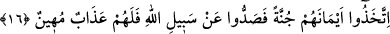
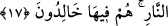

azabdan maksad, bir çeşit büyük azabdır. Çeşit anlamı azab kelimesinin nekre olarak
gelmesinden, büyüklük anlamı da azab kelimesinin şiddet vasfiyle nitelendirilmesinden
anlaşılmaktadır.
“Gerçekten onların yaptıkları şey çok kötüdür.” Yâni onların alışkanlık hâline
getirdikleri ve ısrarla devamlı yaptıkları o iş ne kötü iştir. Geçmiş zamanı ifâde eden
“kâne” fiilinden, onların şu an yapmakta oldukları kötülükleri önceden de yaptıkları ve
bunları alışkanlık hâline getirdikleri anlaşılmaktadır.
16. Onlar yeminlerini kalkan yapıp Allah’ın yolundan alıkoydular. Bu yüzden
onlara küçük düşürücü bir azap vardır.
“Onlar yeminlerini kalkan yapıp Allah’ın yolundan alıkoydular.” Yâni onlar ihtiyaç
duyduklarında yaptıkları yeminlerini kalkan, müminlerin kendilerini öldürmelerinden ve
mallarını almalarından koruyan ve kendilerini örten bir kalkan yaparak Allah’ın
dininden insanları uzaklaştırıp engellediler. Kendi güvenlikleri ve esenlikleri için
karşılaştıkları insanları İslâm’a girmekten oyalayıp, insanlara karşı müslümanları zayıf
gösterdiler.
“Bu yüzden” yâni küfretmeleri ve Allah yolundan alıkoymaları sebebiyle “onlara
küçük düşürücü bir azab vardır.” Mahşer halkı arasında kendilerini rezil ve rüsvay
eden bir azab vardır. Bu, onlara verilecek azâbı başka bir vasıfla nitelendirerek ikinci
bir tehdid oluşturmaktadır. Birincisinin kabir azâbı, bunun ise âhiret azâbı olduğu da
söylenmiştir.
Âyet-i kerîmede geçen eymân kelimesinin tekili olan yemin kelimesi, kasem
hususunda sağ taraf mânâsına da gelir. Yeminleşip andlaşan kişilerin bu esnada
yaptıklarına itibarla yemin kelimesi el/yed yerine istiâre olarak kullanılmıştır. Âyetteki
“cünneh” kelimesi, sâhibinin kendisini korumak için arkasına gizlendiği kalkandır.
Yeminlerini kalkan edinmeleri, sorumlu tutulmaktan korunmak için ihtiyaç
duyduklarında yemin etmeye hazırlıklı olmalarından ibârettir. Yoksa yemini bilfiil
kullandıklarından değil. Çünkü bilfiil yemini kalkan olarak kullanmaları, geçmişte olan
hâinlik ve cinâyetlerinden dolayı sorumlu tutulmalarının ardından vuku bulmuştur.
Dolayısıyla, yalan yemini hazırlayıp gerektiğinde kalkan yapmağa hazır olmak, mutlaka
sorumlu tutulmadan önce olması gerekir.